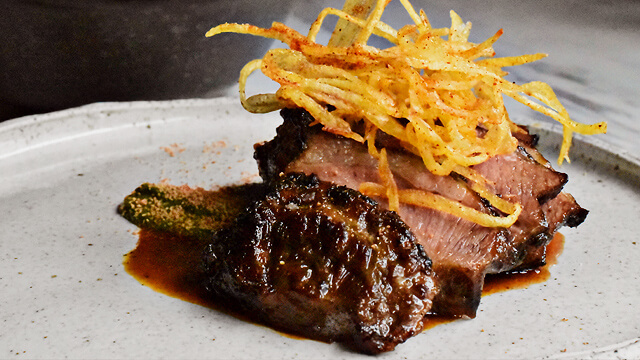

Lampara
Ingredients
1 lb chicken/ beef/mutton/ pork or 2 cups TVP, soaked in hot water 1 lb chicken/ beef/mutton/ pork or 2 cups TVP, soaked in hot water 2 tbsp chilli powder 1 tbsp roasted curry powder 1/2 tsp turmeric 3 cardamoms 3 cloves 1/4 tsp of cinnamon 2 tbsp vinegar 3 cups thick coconut milk 1 red onion, chopped 1/4 tsp fenugreek seeds A piece of rampe 1 stalk lemon grass Sprig of curry leaves 5 cloves garlic, chopped 1/2 inch piece of ginger, chopped 2 tbsp vegetable/coconut oil 1/4 cup of tamarind pulp salt to taste
Instructions
Cut the meat into small pieces. Add the next seven ingredients and mix thoroughly. Heat the oil in a pan, and add the next seven ingredients. Fry till fragrant. Next add the meat mixture and cook under low heat till the meat has cooked. Add tamarind and cook for a couple of minutes. Add salt to taste.